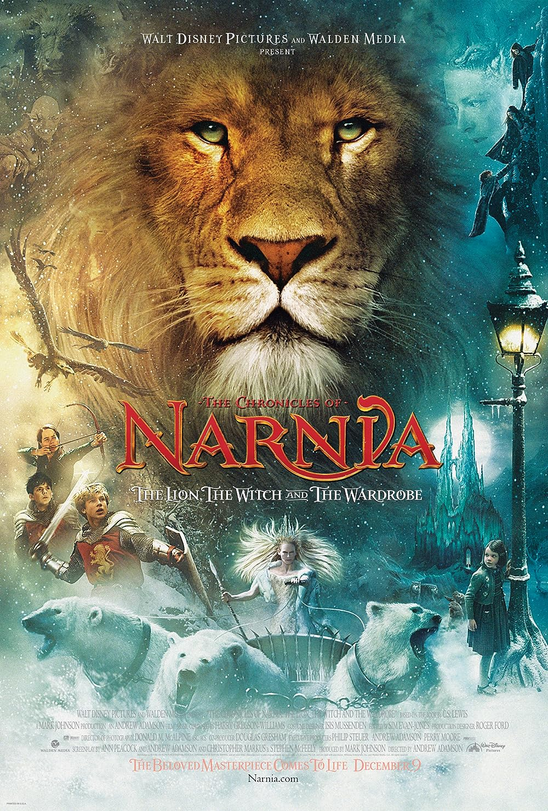

| Poster | Information | Synopsis | Ratings |
|---|---|---|---|
|  | The Chronicles of Narnia: The Lion, The Witch, and The WardrobeCast: Anna Popplewell, William Moseley, Skandar Keynes, Georgie Henley Director: Andrew Adamson Genre: Fantasy Duration: 2:30:00 |
Lucy discovers a wardrobe while playing, and it transports her and her older siblings to the magical kingdom of Narnia. They now understand that it was all predetermined, and they must work with Aslan to vanquish the evil queen. | Ratings: 4.7/5 ☆ Anonymous Review: "When I first saw the first trailer for this movie I couldn't stop watching it over and over and over and over...well you get it. This movie really made me see Disney movies a little different, I've never seen anything like it! What's not to love, talking animals, magic, sword fighting, creatures, and epic wars! Narnia is one of my top favorite fantasy places, next to Hogwarts, middle Earth. I always love watching Narnia movie around Christmas t8me. I always cry on this movie." |
Mr. Bean's HolidayCast: Rowan Atkinson, Maxim Baldry, Emma de Caunes Director: Steve Bendelack Genre: Comedy Duration: 1:30:00 |
After winning a vacation to Cannes, Mr. Bean accidentally keeps a small child apart from his father and has to assist in getting them back together. Along the road, he learns about riding, France, and real love. | Ratings: 4.8/5 ☆ Anonymous Review: "An astoundingly funny and an absolute classic as the original sitcom but with a new flavor to it. It might be the most underrated comedy of all time. Rowan Atkinson is a comic legend as usual with his unbelievably funny physical comedy. Well written, well directed and perfectly acted Mr. Bean's Holiday is a feast for both original sitcom fans and new comers." |
RewindCast: Dingdong Dantes, Marian Rivera, Jordan Lim, Pepe Herrera Director: Mae Czarina Cruz Genre: Romance Duration: 1:52:00 |
Mary loves John her entire life. After years of marriage, John's priorities change, straining their relationship and leading to a tragic accident that takes Mary's life. An extraordinary proposition allows John to rewind time. | Ratings: 5.0/5.0 ☆ Anonymous Review: "This movie made me cry for many times everything about it was so good to the story and musical score it was just fantastic let's talk about the cast is great and the acting is outstanding the cinematograpy is beautiful and the music was just perfect for this movie" |